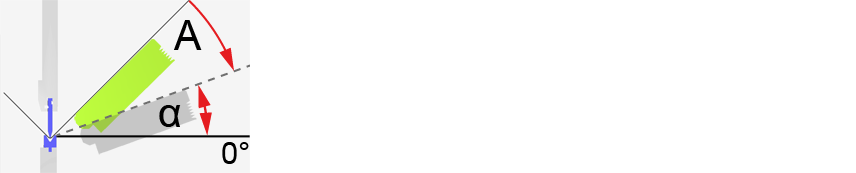

In this dialog box you can change the position of the bending aids or set a new bending aid for the selected bending process. Invalid settings are identified by an error symbol  .
.
The options are displayed in a dedicated area for each bending aid. You can use the arrow buttons to navigate between the various bending aids.
There are two types of bending aid:
- Rear bending aids: Can be moved automatically in the W-axis along the tool holder.
- Front bending aids: For safety reasons cannot be moved automatically in the W-axis along the tool holder. The operator must adjust the position manually for the bending station concerned.
Front / rear bending aid
In this area you can configure the options separately for each front and rear bending aid. The number of bending aids is indicated by a figure.
- Positioned
- Parked
- Enabled
This attribute is used to position all available bending aids horizontally, if this is technically possible from a bending viewpoint. During the bending process, the bending aid does not perform a supporting tilting movement in parallel with the bending process.
NOTE: The front bending aids must be positioned manually on the machine for safety reasons.
Tip: Use this attribute when you want to use the bending aid as a sheet rest.
This attribute is used to move all available bending aids to the parked position. The bending aid remains in the parked position for the current process until the Park attribute is manually disabled using the Edit function from the Bending aids menu, or until another use has been selected.
This attribute is used to assign a bending aid automatically to all bending processes, if this is technically possible from a bending viewpoint. All bending aids fitted are included. During the bending process, the bending aid does perform a supporting tilting movement in parallel with the bending process.
With this option you can manually adjust the height of the bending aid for the appropriate bending process.
Tip: Use this option to optimize the height of bending aids if the automatic system does not find a suitable solution.
This option is used to set the position of the reference point of the bending aid concerned relative to the left-hand outer edge of the press table. There are two ways of positioning:
- By entering the position in the W position box.
- By moving the slide control.
Synchronization for active bending aids
In this area you can configure the synchronized movement of the active bending aid with the ram during the backwards movement after making the bend.
Use:
- To prevent heavy or large bending parts slipping under the bottom tool in the rear area of the machine after bending.
- To prevent the bending part dropping onto the backgauge fingers when rear bending aids are in use.
This option specifies the angle α for synchronous movement of the bending aids (A) back to their initial position after the bending process; the bending aids are moved synchronously with the ram at reduced speed until they reach this angle.
Info: If the maximum angle is entered in the input field, synchronized movement is not performed. The bending aid and the ram move back at normal speed to their initial position.
Fig.: Synchronized return movement of the bending aid (A) as far as angle α.
